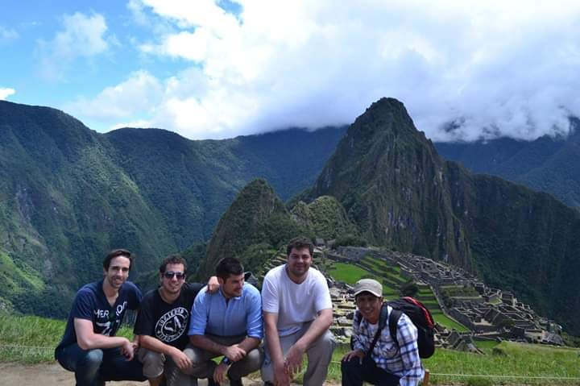

Machu Picchu & Sacred Valley - 2 Days
MACHU PICCHU & SACRED VALLEY - 2 DAYS
INTRODUCTION
With its pleasant climate and fertile land, the Sacred Valley was a key settlement area for the Incas. Located along a popular jungle travel route, it had access to fruit trees and tropical lowland plants that normally would not be available in the high country.
The Sacred Valley has an altitude of 2,800 meters and combines the charm of beautiful landscapes with the history of important Incan archaeology.
DAY 1: SACRED VALLEY
This wonderful tour begins by picking you up from your hotel at 8:30 in the morning to travel to the Sacred Valley. On the way, we stop at Ccorao and Taray, as well as the small town of Pisac, where you will have time to visit the local markets as well as some archaeological sites during a 2 hour guided tour.
From there we continue to the town of Urubamba for a delicious lunch buffet featuring typical regional dishes, then continue on to Ollantaytambo, the famous living Incan town, where we will visit numerous archaeological sites.
Around 19:00, we board the train at Ollantaytambo to go to Aguas Calientes, the gateway to Machu Picchu. There, you will be escorted to your hotel for the night. If interested, there are also optional hot springs at Aguas Calientes.
DAY 2: MACHU PICCHU
After a very early breakfast, we will take a bus from Aguas Calientes to the entrance of Machu Picchu. The day will be spent immersing ourselves in the beauty and incomparable perfection of one of the Seven Wonders of the Modern World. After a 2-hour guided tour, you will have free time to explore the ruins on your own. If you have a ticket, you can also climb the mountain of Huayna Picchu.
Later, we will return by bus to Aguas Calientes, then by train to Ollantaytambo, and finally by bus again to your hotel in Cusco.
INCLUDED
Transportation to and from the Sacred Valley
Buffet lunch in Urubamba
Train tickets: Ollantaytambo → Aguas Calientes → Ollantaytambo
Bus: Aguas Calientes → Machu Pacchu → Aguas Calientes
Entrance tickets to Machu Picchu and Huayna Picchu (optional)
Return transportation: Ollantaytambo → Cusco
Professional bilingual guide
Hotel and breakfast in Aguas Calientes
NOT INCLUDED
Airfare
Food (lunch and dinner)
Tip
RECOMMENDATIONS
Wear sneakers or light shoes
Drink plenty of fluids
Raincoat (or poncho)
Long sleeve shirts
Long pants
Insect repellent
Sunscreen, wide-brimmed hat for sunny days
Medicine and personal items
One light backpack per person
Camera
Have checks and coins in small denominations dollars, euros or soles on hand.
STUDENT DISCOUNTS AVAILABLE
Student University card required. Must be under 25 years of age.
OTHER
DEPARTURES: Daily
NOTE: The entrance to Huayna Picchu must be confirmed at the time of making your reservation and is subject to availability (maximum 400 spots per day). Your reservation must be 3 months in advance.
Feel free to ask about other adventure services, hotels, or other tours outside of Cusco.
Please email us at magiccusco@gmail.com and we will respond as soon as possible with booking information and/or answering your questions.